6.810 Engineering Interactive Technologies (fall 2020)
Part 2: Connecting Micro-controller to UI
Your Task for Today
In the last lab, we have already done steps 1-4 to get our interactive music card going.
(last lab) (1) Circuit Design: You will first draw the circuit design of your card by creating a 2D drawing of the wires and interactive touch and slider areas.
(last lab) (2) Conductive Silver Inkjet Printing: Next, you will print your design with conductive inkjet printing.
(last lab) (3) Wiring up the Buttons: In the next step, you will wire up your touch buttons using a breadboard and an ESP32 microcontroller.
(last lab) (4) Sensing the Touch Signals: Next, you will sense the touch signals using capacitive touch sensing (through Arduino's CapacitiveSensor Library) and apply filtering to the signals.
Today, we are going to connect your card to Processing: When you push the physical touch button it will light up the corresponding digital touch button in Processing and the associated song will play. We will also extend the circuit and signal processing to include the touch slider for the music volume, which we haven't wired up yet.
(today) (5) Visualizing User Input: Next, you will setup the touch buttons in a programming environment called Processing, which will visualize when physical input on the touch buttons on screen and also play the corresponding songs.
(today) (6) Wiring up and Visualizing the Slider: Finally, you will add the slider to your circuit and user interface and use it to control the music volume.
Make sure everything from last lab is still working
Before getting started with the new content, let's first make sure everything from last time is still working and no wires came lose.
To do this, connect your music card and ESP32 again to your computer via USB and upload the program that you haven written in the last lab.
Double check that everything is still working, i.e. when touching one of the touch buttons you should see the touch signals show on the Serial monitor.
(5) Visualizing User Input with Processing
Receiving Touch Input in Processing:
Create Processing Script that Listens to Serial Communication
In the last lab, we sent the touch input to the Arduino IDE and plotted it in the Serial Monitor or Serial Plotter.
Since Arduino has no libraries for graphical user interfaces, we now want to instead send our touch input to Processing.
Processing is a user interface protoyping platform that is based on Java. It was created by MIT students (and others) in their spare time starting in Spring 2001 and is nowadays used by thousands of makers and UI designers. You can find useful information on how to use it in their tutorial section.
In the last lab, we encoded a touch event in the format:
(sensor ID),(is_touched)(newline)
(sensor ID) is either 0, 1 or 2 and represents the ID of the observed touch sensor.
(is_touched) is either 0 or 1 (0 if the sensor is not touched, and 1 if it is touched).
And wrote it to the Serial port using Serial.print().
In order to use this information in Processing, we need to write a Processing script that listens to the Serial communication.
To do this, open Processing, create a new program, and import the Serial library.
import processing.serial.*;
Next, you need to create a new port that can be used for communication by creating an object from this class:
Serial myPort;
To create the port, you need to define three things: (1) you need to tell the port which application will listen to it (i.e. 'this' one), (2) you need to tell the port its portname, and (3) you need to tell the port at which baudrate it should listen to be able to decode the messages.
myPort = new Serial(this, portName, baudrate);
For the portName, you can get a list of all available ports from the Serial library (see below).
By accessing different buckets of the list, you can get access to the name of each port.
The correct port is the one you also used in your Arduino program, i.e. this is where the microcontroller is connected to your laptop.
Check if the correct portname is in bucket 0, 1, or 2 by printing it.
// check which port you use: 0, 1, 2?
String portName = Serial.list()[2];
print(portName);
For the baudrate, you also already know this from your Arduino program that you uploaded to the microcontroller.
Check in your Arduino program with which baudrate you initialized the Serial communication.
If you use a different baudrate than you wrote into the Arduino program, you will only get a lot of random stuff back since your Processing application will not know how to 'translate' the messages that are coming from the microcontroller since it would 'speak' at a different frequency than the Processing application would 'listen'.
Now that your port is defined, we are ready to listen to it and check if data is available, but before we do this let's briefly look at the Processing program structure.
Processing Program Structure: setup() and draw() functions
Similar to Arduino, every Processing program has two functions: one that is run only once (setup()) and one that is looping forever (draw()).
Before we move to the next step, let's create a setup function:
void setup() { // runs only once
}
Move all your code for defining the port into the setup() funtion since we only need to define the port once.
Next, create an empty draw function:
void draw() { //runs infinitely
}
We are going to fill this in the next step with the code that will continously listen to the port and see if any new messages are there from the microcontroller.
Reading Data from the Serial Port
Now that we have the port defined, we can see if data is available.
In the draw function, you need to first check if there is data on the port available, and then you can read the value from the port.
int val;
// If there is a message with at least 4 characters
// remember we are sending in the format: sensorNumber comma touched semicolon with one character each
if (myPort.available() >= 4) {
// read a String until the character ';' is found, which indicates the end of our message
String val = myPort.readStringUntil(';');
}
Note that we use myPort.readStringUntil(), which we can do because we are sending a string on the serial port from our Arduino program that is looping on the microcontroller. If we send other data-types, we would have to use a different function so Processing knows how to convert the un-typed data that is coming through the port at the specific baudrate.
Next, check if this is working. We recommend you print() the String value to the Processing command line, run your Processing program, and touch your touch sensor to see if something gets printed on the Processing command line. If that doesn't work for you, now would be a good moment to get some help.
Creating a Visualization for the Incoming Touch Sensor Data
Now we can do something based on the incoming Strings.
In the next step, we want to create a bar that goes up if the touch sensor is touched and down if the sensor is not touched.
Let's start with a single bar for touch sensor 1 and we can do the rest later.
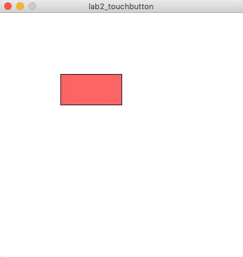
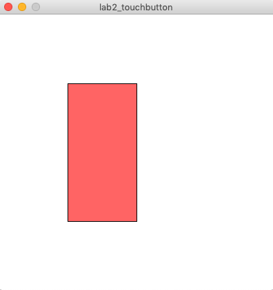
Let's first create the bar with a fixed width of 100px and a fixed height of 300px.
Here are some useful references:
For setting the size of your application window:
For drawing the rectangle:
For coloring the bar and the background:
Once you are done it should look like this:
Next, we can connect the height of the bar to the incoming touch sensor data coming from the serial messages in our Processing Script.
But before we can do this, we first have to do some String Processing on the incoming message.
Splitting the Incoming Message String into Individual Values
What we are currently printing to the command line are String in the format of "0,1;" (sensor_ID,is_touched;).
However, to analyze this data in our code we have to split it again into two individual values so we can check the sensor_ID and and if the sensor is touched or not with an if/else statement.
Use the String split() function to do that.
You can find information on split() and how to use it in the Java String reference.
Once you have both the sensor_ID and is_touched separated, we recommend you check that this worked by printing them to the command line before moving on.
Connecting the Incoming Touch Signals to the Visualization
Next, we will connect the height of the bar to the incoming touch signal.
A high bar shows that the sensor is being touched.
A low bar shows that the sensor is not being touched.
Tips
- If you plan to use a boolean in Processing, the datatype is spelled out
boolean myVariable; not bool like in Arduino.
- If you do a String comparison, remember you cannot use
stringVariable == "StringValue", instead you need to use equals(), check the reference here equals()
- Don't forget to clear the background at the beginning of the draw() function. Otherwise, you are just drawing each update on top of the previous update, so you may actually not see the bar changing since a shorter bar overlaid over a longer bar is not visible. Use
background(255,255,255); or any other color you like.
Once you are done, it should look like this:
Left: not touched, right: touched.
Extend Visualization to Three Bars
Next, we want to extend our user interface to have a bar for all three touch sensors.
It should look like the image below.
Only touch button 1 is touched, touch button 2 and 3 are not touched.
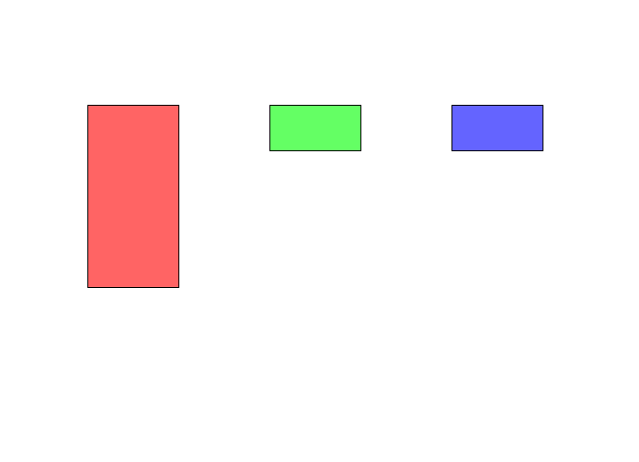
Touching multiple touch sensors simultaenously already works because we are reading messages from the serial port at such a high speed that they come after one another.
Only touch button 1 and 2 are touched, touch button 3 is not touched.
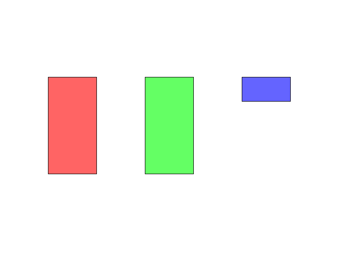
Prepare for playing music: Install Processing 3 Sound Library
Now that we have basic touch input working in Processing, we can connect it to our music play application.
To install the Processing Sound Library, go to Sketch -> Import Library -> Add Library.
Then in the 'Libraries' Tab, search for 'sound' and install the one that is officially from Processing (see image below).

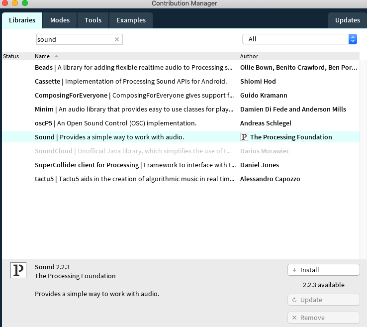
Run Skeleton Code
Once you have the library installed, download the skeleton code we provide for you from here.
Inside the folder, open and run the music_card_nosolution.pde, it will take a little while to load until you see the music card image in the view because we also load the mp3 audio files for the songs, which takes some time.
You should see the music card being loaded into your application as shown below. If you don't see it, please let us know.
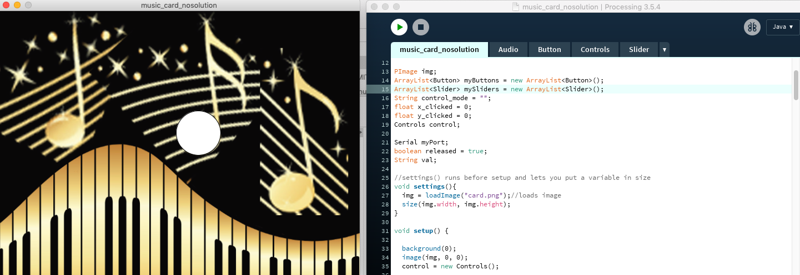
Add Touch Buttons onto the Card
Next, we want to mark the three notes as digital touch buttons.
We will use the:
- left touch button for previous song
- middle touch button for play/pause
- right touch button for next song
To make this easier for you, we already implemented a class 'Buttons' for you.
You can make a new button with:
myButtons.add(new Button(x_top_left, y_top_left, x_bottom_right, y_bottom_right, drawing-mode));
Please add your buttons to line 47 onwards.
One of the buttons is already defined there:
myButtons.add(new Button(80.0, 160.0, 160, 240, "Ellipse")); //line 47
Your final result should look like this:
Create Touch Events for Playing / Pausing the Music and Next/Previous Song
To create events on mouse click, we need to implement several mousePressed() events.
We already did this for you in the code further down in the class.
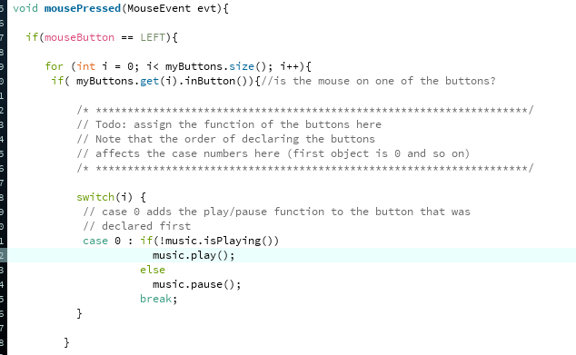
We first iterate over all the buttons you created and then depending on the button ID, we want to execute a music function.
We created a music class that loads several example songs in your project folder and has the functions:
music.play();
music.pause();
music.back();
music.forward();
You can see in the switch/case code that we already assigned the middle button to play and pause music.
Extend the code to also go to the next and previous songs.
Click onto the virtual touch buttons, i.e. onto each note, to see if your code works.
Hide the Touch Buttons
While we want to have a touch button on each note, we don't want to see the white ellipses since they make the card look less good.
We already prepared a piece of code for this for you:
Press the 'h' key on your keyboard while your program runs.
It will hide the buttons but you can still click on them.
If you want to see them again, press 's' (for show).
Study the code to see where this was implemented and how we did it.
Now let's play some music from the Inkjet Printed Physical Card
Now that we have the user interface that we can control digitally and we tested that everything works by clicking onto each note to play/pause and go to previous/next song, we also want to play some music from the physical card.
We have already implemented the Serial communication and the message decoding in the previous exercise, i.e. the Processing application you wrote for displaying the touch bars that go up and down.
Add this code to the music card UI and instead of increasing the height of your bar you are now calling the music functions.
Once you have finished the code, try if it works by touching the notes of your printed music card to play/pause the song and go to the next/previous song.
(6) Wiring up and Visualizing the Slider for Volume Control
Now that we have successfully wired up the touch buttons, processed the touch signals, and visualized them in Processing, we want to do the same three things for the touch slider.
Connect the Physical Slider to the Main Circuit.
Start by wiring up each slider segment exactly the way how you wired up the individual touch buttons.
Remember they can all use the same sender pin but need a different receiver pin.
Refer to Lab 1 if you don't remember how this works.
Here is the pin out again for your reference.
Remember, use the pins with "TOUCHX" labels for better signal quality but do not use the one pin labeled as pin0 (TOUCH1) as receiver (you can still use it as sender).

Thresholding Slider Signals: How much space is it touched?
Once finished with the wiring, extend the Arduino code so that it can also read each slider segment's touch signal.
For the touch buttons, we were merely interested if the button is touched or not, thus we converted the touch signal into a binary value 0 or 1 to indicated if it is pressed or not.
Remember that for the slider we want to do something more sophisticated, i.e. have a continous signal that allows us to smoothly adjust the music volume (rather than jumping from one discrete noise level to the next).
Thus, each slider segment should return a continuous value from 0.0 to 1.0 when touched depending on the area of overlap with the finger.
We can see by 'how much' a slider segment is touched by looking at the raw touch signals coming from the microcontroller.
When looking at the Serial Plotter, you will notice that the raw value has a strong correlation with how much space of the sensor is touched, i.e. the larger the area the higher the value is.
Thus, you can compute continuous value for each slider segment via 2 parameters (see below):
1) threshold to see if it is touched or not (i.e. 'min touch value'), and
2) the 'max touch value' of the slider segment when fully touched.
You can then calculate and print the percentage by "raw_value / max_touch_value" in real-time if the value surpass the "touched" threshold.
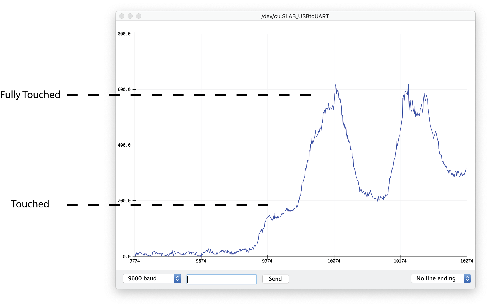
Once you have the continous signal for each slider segment, you need to format the result and write it to the Serial port so that we can read it from Processing.
For each sensor (slider segment), format the output like we did before for the touch button so that:
(sensor ID),(how_much_touched);
(sensor ID) is from 3 - 7, and represents the ID of each slider segment.
(is_touched) is ranging from 0.00 to 1.00 to indicate how much space the sensor is touched.
is this a realistic example? I thought max 2 slider segments will be touched?
A sample output hould look like:
3,0.78;
3,0.86;
5,0.64;
7,0.97;
The output should print continuously as long as the corresponding slider segment is touched.
Create Slider Visualization
Now that the slider segment values are printing to the Serial port, we can read them from Processing.
Open your Processing program that had the three touch bars and add a horizontal bar for the slider.
The bar represents the entire slider. Thus, if the finger is on the left side of slider, the bar should be short and if the finger slides more to the right side of the slider, the bar should be long.
However, before we can render the current slider value on the bar, we will have to do something with the five seperate slider segment values and combine them into one value that represents the overall slider position ranging from 0.00-1.00 (0-100 percent).
You don't have to over-complicate it, some straght-forward linear interpolation will do, as long as the value is overall continuous.
can you say a bit more how you did this? what did you average together?
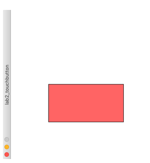
Add Slider onto the Card
Now that you know the slider values can be visualized in Processing, let's add it to the music card to control the music volume.
Open the music card code again.
We already implemented a class 'Slider' for you.
You can make a new slider with:
mySliders.add(new Slider(start_x, start_y, end_x, end_y));
Please add one slider to the code, just like how you added the button.
Add code to the draw() function to display the slider when it is not in "hide" mode.
Your result should look like this.
You should be able to control the slider by dragging your mouse (with left mouse button pressed):
Dragging the mouse on the slider from left to right:
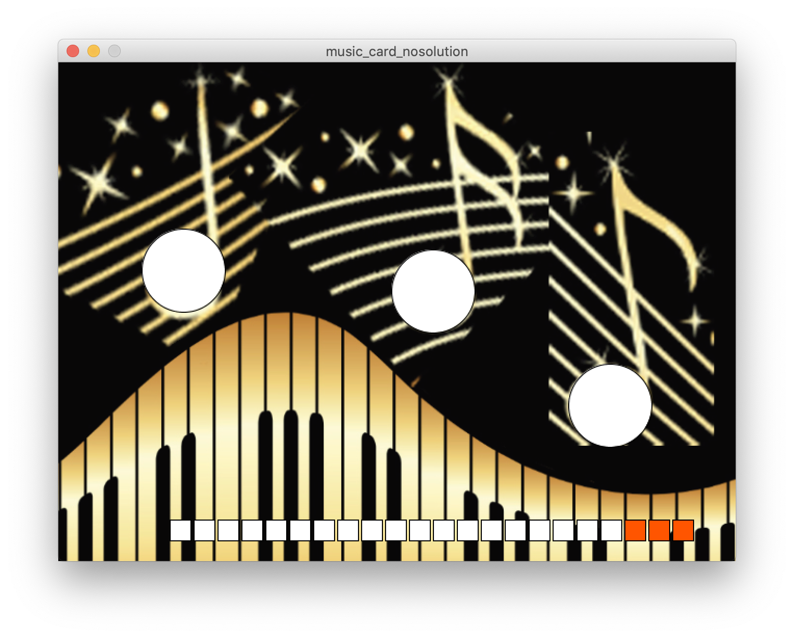
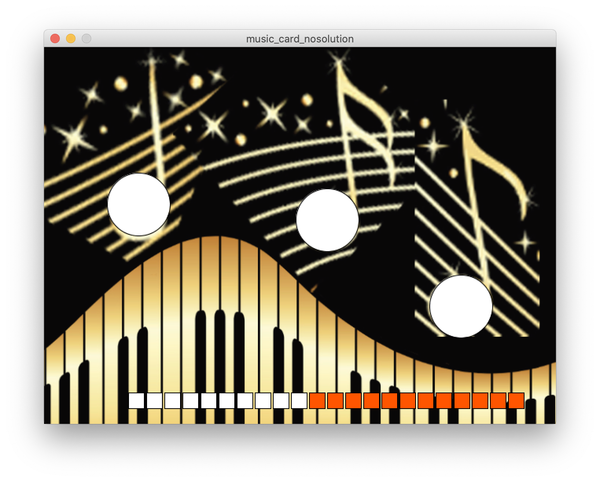
Create Slider Events for the Music Volume Control
To create events on mouse drag, we need to implement several mouseDragged() events.
We already did some parts of it for you in the code further down in the class.
Please go ahead and extend the code so that it changes the music volume based on the slider level.
You might find the following functions from the "Audio" and "Slider" classes useful:
music.changeVolume(double intensity);
Slider.getIntensity();
Once you finished your code, test if the music volume actually changes by first playing a song with the virtual touch button and then dragging the slider to adjust the music volume. If everything works, move on.
Hide the Slider
Similar to the previously added buttons, you can hide the Slider by pressing the 'h' key on your keyboard while your program runs.
If you want to see them again, press 's' (for show).
Now Let's Change Music Volume from the Inkjet Printed Physical Card
Now that we can control the slider digitally, we also want to adjust the volume of the music from the physical card.
Copy over your code from the other Processing application you just wrote and integrate it into the music card.
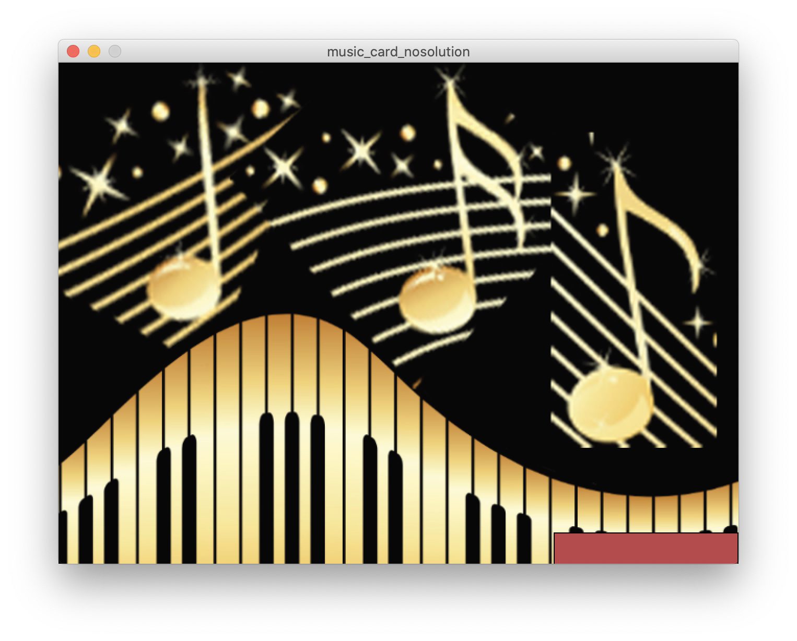
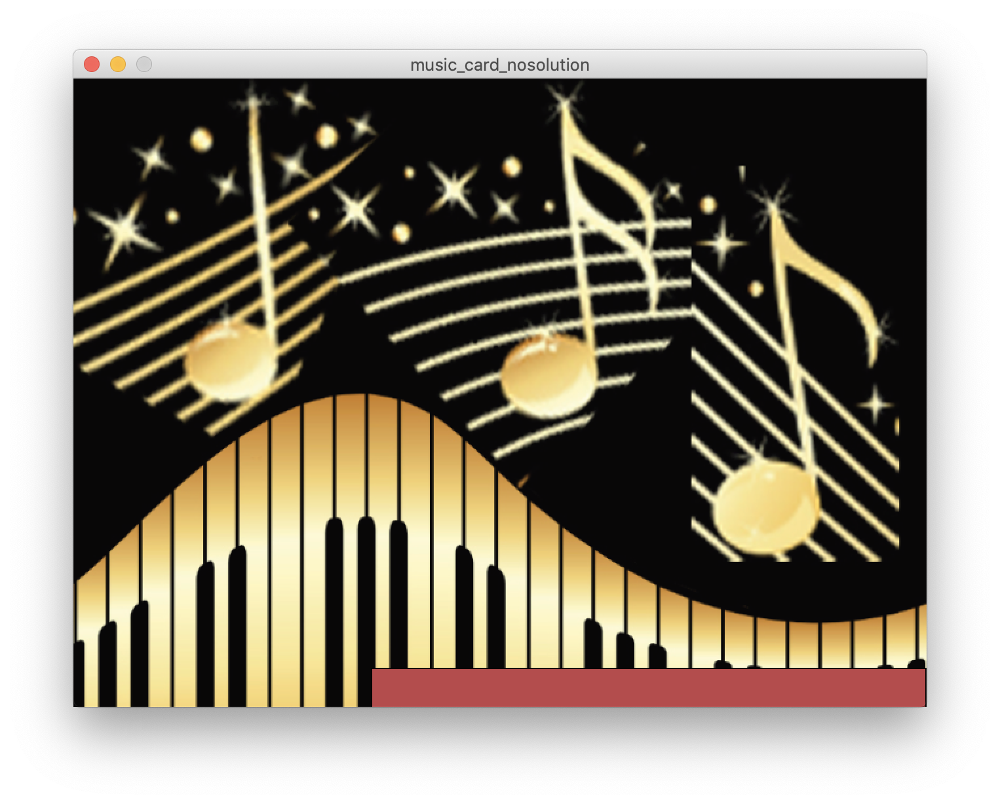
Now test if everything works by using your physical printed card to play/pause songs and the physical slider to adjust the music volume. If it works, congrats, you are done :)!
Conclusion
Now we can read microcontroller input and display it in Processing.
This will come in handy in the future when we want to build and test more advanced user interfaces.
Create Processing Script that Listens to Serial Communication
boolean myVariable; not bool like in Arduino.stringVariable == "StringValue", instead you need to use equals(), check the reference here equals()background(255,255,255); or any other color you like.3,0.78;
3,0.86;
5,0.64;
7,0.97;